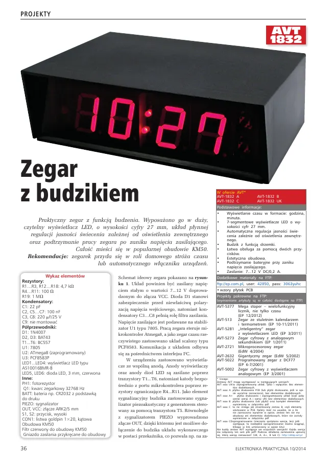

Elektronika dla Wszystkich · 3/2015 · AVT-3125
Włącznik sterowany pilotem podczerwieni
Układ uczący się sygnałów pilota IR i sterujący przekaźnikiem.
Katalog projektów elektronicznych opublikowanych w prasie i materiałach technicznych. Wszystkie pozycje w jednym miejscu, bez podziału na wydawnictwa.
Układ uczący się sygnałów pilota IR i sterujący przekaźnikiem.

Zegar elektroniczny z alarmem, układem RTC i automatyczną regulacją jasności.

Termometr z dużymi wyświetlaczami LED, mikrokontrolerem i cyfrowym czujnikiem temperatury.
Regulacja potencjometru z wykorzystaniem silnika elektrycznego i układu sterowania.

Zasilacz oparty na stabilizatorze LM338, z miernikami napięcia i prądu.